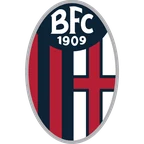

Кальяри — Фрозиноне итог матча 7 ноября
- ТурнирСерия А
- Когда7 ноября, суббота, 17:00 МСК
Коротко о матче
Итог: Кальяри — Фрозиноне 1:0. Перед матчем серия — Кальяри: 4 поражения подряд. Кальяри перед матчем пропускал 2,6 за игру в последних 5. Дома Кальяри: 1 победа в 4 матчах; в гостях Фрозиноне: 1 победа в 4.
Форма: последние матчи
Кальяри 0 побед из 5
 Н1:1
Н1:1 П0:4
П0:4
П0:2 П2:4
П2:4 П1:2
П1:2
Фрозиноне 3 победы из 5
 П0:3
П0:3 В4:2
В4:2 Н4:4
Н4:4- В5:1
 В2:0
В2:0
Положение в таблице
| Команда | Место | И | В | Н | П | Голы | Очки |
|---|---|---|---|---|---|---|---|
| Кальяри | 9 | 11 | 5 | 1 | 5 | 10:15 | 16 |
| Фрозиноне | 6 | 11 | 6 | 2 | 3 | 24:15 | 20 |
Другие матчи Серия А в этот день
Страница клуба: Кальяри · Страница клуба: Фрозиноне · Лига: Серия А · Прогноз на сегодня: Серия А · Все матчи дня колодой
Материалы носят информационный характер и не гарантируют результат. Реклама букмекеров на сайте не размещается. Сайт только для совершеннолетних (18+).